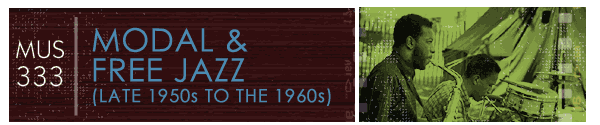

John Litweiler wrote that Free Jazz is "a series of collective improvisations separated by composed themes, at first fanfares, with each horn in turn taking the lead and the others improvising ongoing responses at will, ending in bass, then drums, duets. For most of the work’s forty minutes the basses play an up-down, hugga-bugga shuffle rhythm" (Litweiler 1994, 96).
Unlike Miles’s 1960 modal album, Kind of Blue, Free Jazz does not use modes or a primary pitch center (although thought the music does gravitate to certain pitch centers for fixed periods of time).
The album features two piano-less quartets (eight musicians in total), yet we rarely hear all eight players performing together.
first quartet second quartet
Ornette Coleman, alto sax Eric Dophy, alto sax/bass clarinet
Don Cherry, pocket trumpet Freddie Hubbard, trumpet
Charlie Haden, bass Scott LaFaro, bass
Ed Blackwell, drums Billy Higgins, drums
This ten minute except is taken from a thirty-six minute free improvisation. With only a short melodic motive announcing the beginning of a new solo, the piece is entirely free–no chords, no melody, and no structure. The music, which at first seems like cacophony, creates an engaging, often hypnotic effect upon repeated listenings.
Listen to an excerpt from Ornette Coleman Double Quartet's "Free Jazz" (1960).